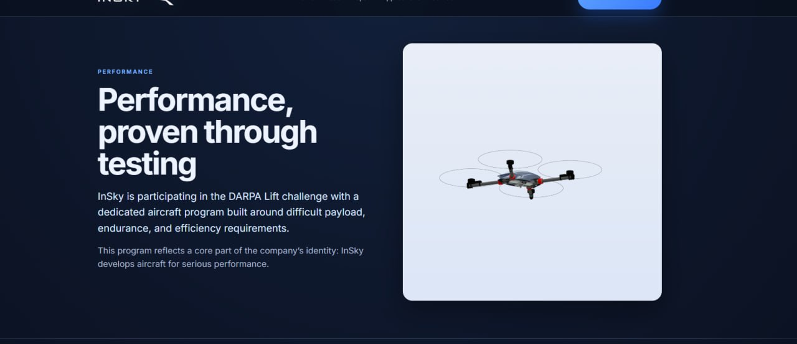

Performance, proven through testing
InSky is participating in the DARPA Lift challenge with a dedicated aircraft program built around difficult payload, endurance, and efficiency requirements.
This program reflects a core part of the company’s identity: InSky develops aircraft for serious performance.

Why this matters
The DARPA Lift challenge forces disciplined engineering under hard constraints.
For InSky, the program helps validate engineering decisions under meaningful performance pressure, strengthen credibility as a serious aircraft manufacturer, and sharpen the technical judgment that informs future commercial platforms.
The aircraft
The InSky DARPA aircraft is a dedicated minimal machine tailored specifically to the challenge requirements.
It is intended to exceed the challenge thresholds and prove that performance through structured testing.
More than peak lift
The aircraft must perform effectively in multiple demanding regimes, including loaded flight with significant payload over distance and unloaded flight over a further segment.
That requires more than raw thrust. It requires an aircraft and operating strategy that remain effective across changing conditions.
Current operating target
The current target is to have the aircraft ready by May 1 to begin test flying.
- initial validation
- iterative refinement
- performance characterization
- competition-day strategy development
Technical credibility and design discipline
DARPA Lift strengthens InSky by improving technical credibility, refining aircraft design judgment, and demonstrating serious performance-oriented development capability.
Discuss a mission